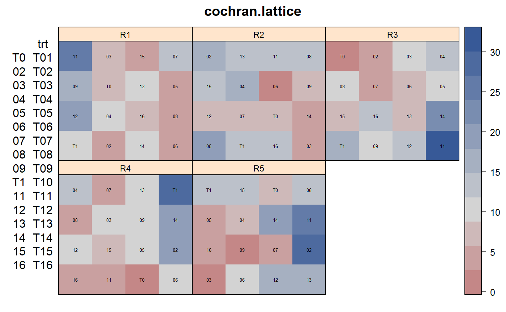

cochran.lattice.RdBalanced lattice experiment in cotton
data("cochran.lattice")
A data frame with 80 observations on the following 5 variables.
ypercent of affected flower buds
repreplicate
rowrow
colcolumn
trttreatment factor
The experiment is a balanced lattice square with 16 treatments in a 4x4 layout in each of 5 replicates. The treatments were applied to cotton plants. Each plot was ten rows wide by 70 feet long (about 1/18 of an acre). (Estimated plot width is 34.5 feet.) Data were collected from the middle 4 rows. The data are the percentages of squares showing attack by boll weevils. A 'square' is the name given to a young flower bud.
The plot orientation is not clear.
William G. Cochran, Gertrude M. Cox. Experimental Designs, 2nd Edition. Page 490.
Originally from: F. M. Wadley (1946). Incomplete block designs in insect population problems. J. Economic Entomology, 38, 651--654.
Walter Federer. Combining Standard Block Analyses With Spatial Analyses Under a Random Effects Model. Cornell Univ Tech Report BU-1373-MA. http://hdl.handle.net/1813/31971
library(agridat) data(cochran.lattice) dat <- cochran.lattice libs(desplot) desplot(y~row*col|rep, dat, text=trt, # aspect unknown, should be 2 or .5 main="cochran.lattice")# Random rep,row,column model often used by Federer libs(lme4) dat <- transform(dat, rowf=factor(row), colf=factor(col)) m1 <- lmer(y ~ trt + (1|rep) + (1|rep:row) + (1|rep:col), data=dat)#>summary(m1)#> Linear mixed model fit by REML ['lmerMod'] #> Formula: y ~ trt + (1 | rep) + (1 | rep:row) + (1 | rep:col) #> Data: dat #> #> REML criterion at convergence: 433.9 #> #> Scaled residuals: #> Min 1Q Median 3Q Max #> -2.1384 -0.5057 -0.0117 0.4584 2.2629 #> #> Random effects: #> Groups Name Variance Std.Dev. #> rep:col (Intercept) 3.17 1.781 #> rep:row (Intercept) 10.92 3.304 #> rep (Intercept) 0.00 0.000 #> Residual 23.86 4.885 #> Number of obs: 80, groups: rep:col, 20; rep:row, 20; rep, 5 #> #> Fixed effects: #> Estimate Std. Error t value #> (Intercept) 6.090 2.566 2.373 #> trtT02 7.641 3.451 2.214 #> trtT03 2.403 3.451 0.696 #> trtT04 5.254 3.451 1.522 #> trtT05 3.472 3.451 1.006 #> trtT06 1.206 3.451 0.350 #> trtT07 1.208 3.451 0.350 #> trtT08 3.323 3.451 0.963 #> trtT09 4.024 3.451 1.166 #> trtT10 9.094 3.451 2.635 #> trtT11 11.815 3.451 3.423 #> trtT12 6.756 3.451 1.958 #> trtT13 4.942 3.451 1.432 #> trtT14 8.160 3.451 2.364 #> trtT15 3.205 3.451 0.929 #> trtT16 4.537 3.451 1.315#> #> #> #>#> convergence code: 0 #> boundary (singular) fit: see ?isSingular #>